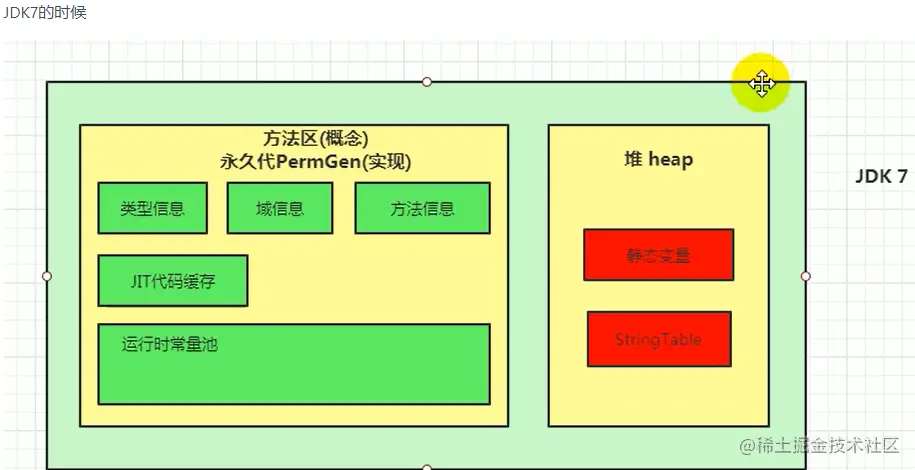

深入理解堆外内存 Metaspace
在之前介绍的分代垃圾回收算法中，我们一直有一个永久代存在，叫 PermGen，内存上它是挨着堆的。为了垃圾回收方便，HotSpot 在永久代上一直是使用老年代的垃圾回收算法。
永久代主要存放以下数据：
JVM internal representation of classes and their metadata
Class statics
Interned strings
从 JDK7 开始，JDK 开发者们就有消灭永久代的打算了。有部分数据移到永久代之外了：
Symbols => native memory
Interned strings => Java Heap
Class statics => Java Heap

到了 JDK8，这个工作终于完成了，彻底废弃了 PermGen，Metaspace 取而代之。
本文的内容主要是翻译 Thomas Stüfe 的 Metaspace 系列文章，他是 OpenJDK Committer/Reviewer. JVM developer at SAP，一看 Title 就很靠谱，因为他是 JVM 开发者，当然主要是内容也写得非常棒。
当然了，我不是一字一句翻译，文中会删掉部分累赘的内容，讲清楚就可以了。同时，原文第五篇是介绍使用 jcmd 工具观察 Metaspace 的空间使用情况，这一节我觉得没有必要介绍，所以没有加进来。
1、什么是 Metaspace
Metaspace 区域位于堆外，所以它的最大内存大小取决于系统内存，而不是堆大小，我们可以指定 MaxMetaspaceSize 参数来限定它的最大内存。
Metaspace 是用来存放 class metadata 的，class metadata 用于记录一个 Java 类在 JVM 中的信息，包括但不限于 JVM class file format 的运行时数据：
Klass 结构，这个非常重要，把它理解为一个 Java 类在虚拟机内部的表示吧；
method metadata，包括方法的字节码、局部变量表、异常表、参数信息等；
常量池；
注解；
方法计数器，记录方法被执行的次数，用来辅助 JIT 决策；
其他
虽然每个 Java 类都关联了一个 java.lang.Class 的实例，而且它是一个贮存在堆中的 Java 对象。但是类的 class metadata 不是一个 Java 对象，它不在堆中，而是在 Metaspace 中。
什么时候分配 Metaspace 空间
当一个类被加载时，它的类加载器会负责在 Metaspace 中分配空间用于存放这个类的元数据。

上面这个示意图非常简单，可以看到在 Id 这个类加载器第一次加载类 X 和 Y 的时候，在 Metaspace 中为它们开辟空间存放元信息。
什么时候回收 Metaspace 空间
分配给一个类的空间，是归属于这个类的类加载器的，只有当这个类加载器卸载的时候，这个空间才会被释放。
所以，只有当这个类加载器加载的所有类都没有存活的对象，并且没有到达这些类和类加载器的引用时，相应的 Metaspace 空间才会被 GC 释放。看下图：

所以，一个 Java 类在 Metaspace 中占用的空间，它是否释放，取决于这个类的类加载器是否被卸载。
内存通常会被保留
释放 Metaspace 的空间，并不意味着将这部分空间还给系统内存，这部分空间通常会被 JVM 保留下来。
这部分被保留的空间有多大，取决于 Metaspace 的碎片化程度。另外，Metaspace 中有一部分区域 Compressed Class Space 是一定不会还给操作系统的。
这里先了解概念，后面都会展开来说。
配置 Metaspace 空间
我们只需要关心两个配置参数：
-XX:MaxMetaspaceSize：Metaspace 总空间的最大允许使用内存，默认是不限制。-XX:CompressedClassSpaceSize：Metaspace 中的 Compressed Class Space 的最大允许内存，默认值是 1G，这部分会在 JVM 启动的时候向操作系统申请 1G 的虚拟地址映射，但不是真的就用了操作系统的 1G 内存。
Metaspace 和 GC
Metaspace 只在 GC 运行并且卸载类加载器的时候才会释放空间。当然，在某些时候，需要主动触发 GC 来回收一些没用的 class metadata，即使这个时候对于堆空间来说，还达不到 GC 的条件。
Metaspace 可能在两种情况下触发 GC：
1、分配空间时：虚拟机维护了一个阈值，如果 Metaspace 的空间大小超过了这个阈值，那么在新的空间分配申请时，虚拟机首先会通过收集可以卸载的类加载器来达到复用空间的目的，而不是扩大 Metaspace 的空间，这个时候会触发 GC。这个阈值会上下调整，和 Metaspace 已经占用的操作系统内存保持一个距离。
2、碰到 Metaspace OOM：Metaspace 的总使用空间达到了 MaxMetaspaceSize 设置的阈值，或者 Compressed Class Space 被使用光了，如果这次 GC 真的通过卸载类加载器腾出了很多的空间，这很好，否则的话，我们会进入一个糟糕的 GC 周期，即使我们有足够的堆内存。
所以大家千万不要把 MaxMetaspaceSize 设置得太小。
2、Metaspace 的架构
这一节将深入到 Metaspace 的架构实现，将描述它的每一层和每一个组件，以及它们是怎么工作的。
对于开发者来说，这一定是非常有趣的一件事情，我们大部分开发者都不可能去开发 JDK，但是了解这些总是充满着乐趣。
Metaspace 在实现上分为多层。最底层，负责向操作系统申请大块的内存；中间的一层，负责分出一小块一小块给每个类加载器；最顶层，类加载器负责把这些申请到的内存块用来存放 class metadata。
最底层：the space list
在最底层，JVM 通过 mmap(3) 接口向操作系统申请内存映射，在 64 位平台上，每次申请 2MB 空间。
当然，这里的 2MB 不是真的就消耗了主存的 2MB，只有之后在使用的时候才会真的消耗内存。这里是虚拟内存映射。
每次申请过来的内存区域，放到一个链表中 VirtualSpaceList，作为其中的一个 Node。看下图。
一个 Node 是 2MB 的空间，前面说了在使用的时候再向操作系统申请实际的内存，但是频繁的系统调用会降低性能，所以 Node 内部需要维护一个水位线，当 Node 内已使用内存快达到水位线的时候，向操作系统要新的内存页。并且相应地提高水位线。
直到一个 Node 被完全用完，会分配一个新的 Node，并且将其加入到链表中，老的 Node 就 “退休” 了。下图中，前面的三个 Node 就是退休状态了。
从一个 Node 中分配内存，每一块称为 MetaChunk，chunk 有三种规格，在 64 位系统中分别为 1K、4K、64K。

链表 VirtualSpaceList 和每个节点 Node 是全局的，而 Node 内部的一个个 MetaChunk 是分配给每个类加载器的。所以一个 Node 通常由分配给多个类加载器的 chunks 组成。

当一个类加载器和它加载的所有的类都卸载的时候，它占用的 chunks 就会加入到一个全局的空闲列表中：ChunkManager，看下图：

这些 chunks 会被复用：如果其他的类加载器加载新的类，它可能就会得到一个空闲列表中的 chunk，而不是去 Node 中申请一个新的 chunk。

后面会说到，如果刚好把整个 Node 都清空了，那么这整个 Node 的内存会直接还给操作系统。
当然，由这个 Node 进入到空闲列表的节点也要删除。
中间层：Metachunk
通常一个类加载器在申请 Metaspace 空间用来存放 metadata 的时候，也就需要几十到几百个字节，但是它会得到一个 Metachunk，一个比要求的内存大得多的内存块。
为什么？因为前面说了，要从全局的 VirtualSpaceList 链表的 Node 中分配内存是昂贵的操作，需要加锁。我们不希望这个操作太频繁，所以一次性给一个大的 MetaChunk，以便于这个类加载器之后加载其他的类，这样就可以做到多个类加载器并发分配了。只有当这个 chunk 用完了，类加载器才需要又去 VirtualSpaceList 申请新的 chunk。
前面说了，chunk 有三种规格，那 Metaspace 的分配器怎么知道一个类加载器每次要多大的 chunk 呢？这当然是基于猜测的：
通常，一个标准的类加载器在第一次申请空间时，会得到一个 4K 的 chunk，直到它达到了一个随意设置的阈值（4），此时分配器失去了耐心，之后会一次性给它一个 64K 的大 chunk。
bootstrap classloader 是一个公认的会加载大量的类的加载器，所以分配器会给它一个巨大的 chunk，一开始就会给它 4M。可以通过 InitialBootClassLoaderMetaspaceSize 进行调优。
反射类类加载器 (
jdk.internal.reflect.DelegatingClassLoader) 和匿名类类加载器只会加载一个类，所以一开始只会给它们一个非常小的 chunk（1K），因为给它们太多就是一种浪费。
类加载器申请空间的时候，每次都给类加载器一个 chunk，这种优化，是建立在假设它们立马就会需要新的空间的基础上的。这种假设可能正确也可能错误，可能在拿到一个很大的 chunk 后，这个类加载器恰巧就不再需要加载新的类了。
对于这部分可能的空间浪费，可以在后面介绍的系统工具中观察到。
最顶层：Metablock
在 Metachunk 上，我们有一个二级分配器（class-loader-local allocator），它将一个 Metachunk 分割成一个个小的单元，这些小的单元称为 Metablock，它们是实际分配给每个调用者的。
这个二级分配器非常原始，它的速度也非常快：
前面说过，class metadata 的生命周期是和类加载器绑定的，所以在类加载器卸载的时候，JVM 可以大块大块地释放这些空间。
下面展示一个 Metachunk 的结构：

这个 chunk 诞生的时候，它只有一个 header，之后的分配都只要在顶部进行分配就行。
由于这个 chunk 是归属于一个类加载器的，所以如果它不再加载新的类，那么 unused 空间就将真的浪费掉。
ClassloaderData and ClassLoaderMetaspace
在 JVM 内部，一个类加载器以一个 ClassLoaderData 结构标识，这个结构引用了一个 ClassLoaderMetaspace 结构，它维护了该加载器使用的所有的 Metachunk。
当这个类加载器被卸载的时候，这个 ClassLoaderData 和 ClassLoaderMetaspace 会被删除。并且会将所有的这个加载器用到的 chunks 归还到空闲列表中。这部分内存是否可以直接归还给操作系统取决于是否满足其他条件，后面会介绍。
就是前面提过的，如果恰好把整个 Node 都清空了，那么这个 Node 的内存直接还给操作系统
匿名类
ClassloaderData != ClassLoaderMetaspace
注意，我们前面说，“Metaspace 内存是属于类加载器的”，但是，这里其实撒了一个小谎，如果将匿名类考虑进去，那就更加复杂了：
当类加载器加载一个匿名类时，这个类有自己独立的 ClassLoaderData，它的生命周期是跟随着这个匿名类的，而不是这个类加载器（所以，和它相关的空间可以在类加载器卸载前得到释放）。所以，一个类加载器有一个主要的 ClassLoaderData 结构用来服务所有的正常的类，对于每一个匿名类，还有一个二级的 ClassLoaderData 结构来维护。
这样做的目的之一，其实就是没有必要扩大大量的 Lambdas 和 method handlers 在 Metaspace 中的空间的生命周期。

内存什么时候会还给操作系统
当一个 VirtualSpaceListNode 中的所有 chunk 都是空闲的时候，这个 Node 就会从链表 VirtualSpaceList 中移除，它的 chunks 也会从空闲列表中移除，这个 Node 就没有被使用了，会将其内存归还给操作系统。

对于一个空闲的 Node 来说，拥有其上面的 chunks 的所有的类加载器必然都是被卸载了的。
至于这个情况是否可能发生，主要就是取决于碎片化：
一个 Node 是 2M，chunks 的大小为 1K, 4K 或 64K，所以通常一个 Node 上有约 150-200 个 chunks，如果这些 chunks 全部由同一个类加载器拥有，回收这个类加载器就可以一次性回收这个 Node，并且把它的空间还给操作系统。
但是，如果这些 chunks 分配给不同的类加载器，每个类加载器都有不同的生命周期，那么什么都不会被释放。这也许就是在告诉我们，要小心对待大量的小的类加载器，如那些负责加载匿名类或反射类的加载器。
同时也要清楚，Metaspace 中的 Compressed Class Space 是永远不会将内存还给操作系统的。我们马上就要介绍这部分内容了。
本节小结
每次向操作系统申请 2M 的虚拟空间映射，放置到全局链表中，待需要使用的时候申请内存。
一个 Node 会分割为一个个的 chunks，分配给类加载器，一个 chunk 属于一个类加载器。
chunk 再细分为一个个 Metablock，这是分配给调用者的最小单元。
当一个类加载器被卸载，它占有的 chunks 会进入到空闲列表，以便复用，如果运气好的话，有可能会直接把内存归还给操作系统。
3、什么是 Compressed Class Space
在 64 位平台上，HotSpot 使用了两个压缩优化技术，Compressed Object Pointers (“CompressedOops”) 和 Compressed Class Pointers。
压缩指针，指的是在 64 位的机器上，使用 32 位的指针来访问数据（堆中的对象或 Metaspace 中的元数据）的一种方式。
这样有很多的好处，比如 32 位的指针占用更小的内存，可以更好地使用缓存，在有些平台，还可以使用到更多的寄存器。
当然，在 64 位的机器中，最终还是需要一个 64 位的地址来访问数据的，所以这个 32 位的值是相对于一个基准地址的值。
CompressedOops 说的是对象引用的压缩，它不在本文的讨论范围内。
在 64 位平台上，本质上还是需要使用 64 位地址来引用每一个对象的，但是这项技术使得可以只使用 32 位地址来实现引用。大家可以参考一下评论区的讨论，这里就不展开了。
由于本文在描述的是 Metaspace，所以我们这里不关心 Compressed Object Pointers，下面将描述 Compressed Class Pointers：
每个 Java 对象，在它的头部，有一个引用指向 Metaspace 中的 Klass 结构。

当使用了 compressed class pointers，这个引用是 32 位的值，为了找到真正的 64 位地址，需要加上一个 base 值：

上面的内容应该很好理解，这项技术对 Klass 的分配带来的问题是：由于 32 位地址只能访问到 4G 的空间，所以最大只允许 4G 的 Klass 地址。这项限制也意味着，JVM 需要向 Metaspace 分配一个连续的地址空间。
当从系统申请内存时，通过调用系统接口 malloc(3) 或 mmap(3)，操作系统可能返回任意一个地址值，所以在 64位系统中，它并不能保证在 4G 的范围内。
所以，我们只能用一个 mmap() 来申请一个区域单独用来存放 Klass 对象。我们需要提前知道这个区域的大小，而且不能超过 4G。显然，这种方式是不能扩展的，因为这个地址后面的内存可能是被占用的。
只有 Klass 结构有这个限制，对于其他的 class metadata 没有这个必要: 因为只有 Klass 实例是通过 Java 对象 header 中的压缩指针访问的。其他的 metadata 都是通过 64 位的地址进行访问的，所以它们可以被放到任意的地址上。
所以，我们决定将 Metaspace 分为两个区域：non-class part 和 class part。
class part：存放 Klass 对象，需要一个连续的不超过 4G 的内存
non-class part：包含其他的所有 metadata
class part 被称作 Compressed Class Space，这个名字会有点怪，因为 Klass 本身其实没有使用压缩技术，而是引用它们的指针被压缩了。
compressed class space 空间的大小，是通过 -XX:CompressedClassSpaceSize 指定的。
我们需要提前知道自己需要多少内存，它的默认值是 1G。当然这个 1G 并不是真的使用了操作系统的 1G，而是虚拟地址映射。
实现
为了复用已有的 Metaspace 空间，使用了一个小技巧：
在 Class Space 和 Non-Class Space 中，分别都有 VirtualSpaceList 和 ChunkManager 两个结构。
但是对于 Class Space，既然我们需要一个连续的空间我们不能使用一个链表来存放所有的 Node，所以这个链表退化为只有一个节点，并且不能扩展。这个 Node 就是 compressed class space，和 Non-Class Space 中的 Node 相比，它可是巨大无比。

ClassLoaderMetaspace（记录当前类加载器持有哪些 chunks）需要两个链表，一个用于记录 Class Space 中的 chunks，一个用于记录 Non-Class Space 中的 chunks。
到这里应该也很好理解，就是对于一个类加载器来说，它需要知道自己使用了 non-class part 中的哪些 chunks 和 class part 中的哪些 chunks。
开关: UseCompressedClassPointers, UseCompressedOops
-XX:+UseCompressedOops 允许对象指针压缩。
-XX:+UseCompressedClassPointers 允许类指针压缩。
它们默认都是开启的，可以手动关闭它们。
如果不允许类指针压缩，那么将没有 compressed class space 这个空间，并且-XX:CompressedClassSpaceSize 这个参数无效。
-XX:-UseCompressedClassPointers 需要搭配 -XX:+UseCompressedOops，但是反过来不是: 我们可以只压缩对象指针，不压缩类指针。
这里面为什么这么规定我也不懂，但是从直觉上来说，压缩对象指针显然是比较重要的，能获得较大的收益。也许就是基于这种考量吧：你连对象指针都不压缩，类指针压缩不压缩又有什么关系呢？
注意，对象指针压缩要求堆小于 32G，所以如果堆大于等于 32G，那么对象指针压缩和类指针压缩都会被关闭。
32G 可不是一个掐指一算随便指定的数字，看下评论区就知道原因了。
4、度量 Metaspace
前面我们介绍过，MaxMetaspaceSize 和 CompressedClassSpaceSize 是控制 Metaspace 的两个配置。
回顾一下：
MaxMetaspaceSize
最大允许 Metaspace 使用的内存，包括 Class Space 和 Non-Class Space，默认是不限制。
CompressedClassSpaceSize
在启动的时候就限制 Class Space 的大小，默认值是 1G，启动后不可以修改。再说一遍，它是 reserved 不是 committed 的内存。
下图展示了它们是怎么工作的：

红色部分是 Metaspace 中已使用的系统内存，包括 Non-Class Space 链表中的红色部分和 Class Space 中大 Node 的红色部分。这个总和受到 -XX:MaxMetaspaceSize 的限制，超出将抛出 OutOfMemoryError(“Metaspace”)。
-XX:CompressedClassSpaceSize 限制了下方的 Class Space 中，这个大 Node 的大小，包括了红色已使用的内存和蓝色未使用的内存。如果这个 Node 被用完了，会抛出 OutOfMemoryError(“Compressed Class Space”)。
所以这意味着什么？
当一个 Java 类被加载后，它需要 Non-Class Space 和 Class Space 的空间，而且后者通常都是被限制的(默认 1G)，所以我们总是有那么一个上限存在，即使 -XX:MaxMetaspaceSize 没有配置。
所以，是否会触及到这个上限，取决于 Non-Class Space 和 Class Space 的使用比例。
对于每个类，我们假设这个比例是 1: 5 （class:non-class） 。
这意味着，对于 -XX:CompressedClassSpaceSize 的 1G 的默认值，我们的上限约 6G，1G 的 Class Space 再加约 5G 的 Non-Class Space。
一个类大概需要多大的 Metaspace 空间
对于一个被加载到虚拟机中的类，Metaspace 需要分配 class 和 non-class 空间，那么这些空间花在哪里了呢？看下图：

深入 Class Space：
最大的一部分是 Klass 结构，它是固定大小的。
然后紧跟着两个可变大小的 vtable 和 itable，前者由类中方法的数量决定，后者由这个类所实现接口的方法数量决定。
随后是一个 map，记录了类中引用的 Java 对象的地址，尽管该结构一般都很小，不过也是可变的。
vtable 和 itable 通常也很小，但是对于一些巨大的类，它们也可以很大，一个有 30000 个方法的类，vtable 的大小会达到 240k，如果类派生自一个拥有 30000 个方法的接口，也是同理。但是这些都是测试案例，除了自动生成代码，你从来不会看到这样的类。
深入 Non-Class Space
这个区域有很多的东西，下面这些占用了最多的空间：
常量池，可变大小；
每个成员方法的 metadata：ConstMethod 结构，包含了好几个可变大小的内部结构，如方法字节码、局部变量表、异常表、参数信息、方法签名等；
运行时数据，用来控制 JIT 的行为；
注解
Metaspace 中的结构都继承自 MetaspaceObj，所以查看它的类继承结构能了解更详细的信息。
Class space 和 Non-Class Space 比例
下面看一下在一些典型的应用中，它们之间的大小比例数据。
下面是 WildFly 应用服务器，16.0.0，运行在 SAPMachine 11 平台上，没有加载任何应用。我们检查下总共需要多少 Metaspace 空间，然后计算平均每个类所需要的空间。我们使用 jcmd VM.metaspace 进行度量。
| loader | #classes | non-class space (avg per class) | class space (/avg per class) | ratio non-class/class |
| all | 11503 | 60381k (5.25k) | 9957k (0.86k) | 6.0 : 1 |
| bootstrap | 2819 | 16720k (5.93k) | 1768k (0.62k) | 9.5 : 1 |
| app | 185 | 1320k (7.13k) | 136k (0.74k) | 9.7 : 1 |
| anonymous | 869 | 1013k (1.16k) | 475k (0.55k) | 2.1 : 1 |
这个表告诉我们：
对于正常的类（我们假设通过 bootstrap 和 app 加载的类是正常的），我可以得到平均每个类需要约 5-7k 的 Non-Class Space 和 600-900 bytes 的 Class Space。
匿名类要小得多，但是也有一个有趣的事情，Class 和 Non-Class Space 之间的比例，相对的，我们需要更多的 Class Space。这也不奇怪，因为诸如 Lambda 类都是很小的，但是它的 Klass 结构不可能小于 sizeof(Klass)。所以，我们得到 1k Non-Class Space 和 0.5k Class Space。
注意，在我们的案例中，匿名类的数据可能没有代表性，需要收集更多的匿名类，才能得到更准确的数据。
Metaspace 默认大小
如果我们完全不设置限制 Metaspace 的大小，那么 Metaspace 可以容纳多少类呢？
MaxMetaspaceSize 默认是没有限制的，CompressedClassSpaceSize 默认是 1G，所以我们唯一会触碰到的是 Class Space 空间的上限。
使用上面的数据，每个类约 5-7k 的 Non-Class Space 和 600-900 bytes 的 Class Space，我们可以估算出大约 1-1.5 百万的类（假设没有碎片、没有浪费）以后会触碰到 Class Space 的 OOM。这是一个很大的数值了。
限制 Metaspace 空间大小
免责声明：不要盲目使用你在网络上找到的规则，尤其是这些数据并非来自生产数据。
其实我们没有什么选择，你确实可以限制 Metaspace 的空间增长，但是如果你的程序需要更多的空间用来存放 class metadata，那么你就会碰到 OOM，除了让你的代码加载更少的类，否则，你几乎是无能为力。
和堆进行比较：你可以增加和减少堆的大小，而不必影响代码功能，所以堆的配置是比较灵活的，而 Metaspace 不具备这个特性。
那么你为什么要限制 Metaspace 的大小呢？
告警系统需要知道，为什么 Metaspace 空间以一个异常的速度在消耗，需要有人去看一下发生了什么。
有时候需要限制虚拟内存地址的大小。通常我们感兴趣的是实际消耗内存，但是虚拟内存大小可能会导致虚拟机进程达到系统限制。
注意：JDK 版本依赖：与 JDK 11或更高版本相比，JDK 8 中的元空间受到碎片的影响更大。所以在 JDK 8 环境下分配的时候，需要设置更多的缓冲。
如果要限制 Metaspace 大小使得系统更容易被监控，同时不用在乎虚拟地址空间的大小，那么最好只设置 MaxMetaspaceSize 而不用设置 CompressedClassSpaceSize。如果要单独设置，那么最好设置 CompressedClassSpaceSize 为 MaxMetaspaceSize 的 80% 左右。
除了 MaxMetaspaceSize 之外，减小 CompressedClassSpaceSize 的唯一原因是减小虚拟机进程的虚拟内存大小。 但是，如果将 CompressedClassSpaceSize 设置得太低，则可能在用完 MaxMetaspaceSize 之前先用完了 Compressed Class Space。 在大多数情况下，比率为1：2（CompressedClassSpaceSize = MaxMetaspaceSize / 2）应该是安全的。
那么，你应该将 MaxMetaspaceSize 设置为多大呢？ 首先应该是计算预期的 Metaspace 使用量。你可以使用上面给出的数字，然后给每个类约 1K 的 Class Space 和 3~8K 的 Non-Class Space 作为缓冲。
因此，如果你的应用程序计划加载10000个类，那么从理论上讲，你只需要 10M 的 Class Space 和 80M Non-Class Space。
然后，你需要考虑安全系数。在大多数情况下，因子 2 是比较安全的。你当然也可以碰运气，设置低一点，但是要做好在碰到 OOM 后调大 Metaspace 空间的准备。
如果设置安全因子为 2，那么需要 20M 的 Class Space 和 160M 的 Non-Class Space，也就是总大小为 180M。因此，在这里 -XX:MaxMetaspaceSize=180M 是一个很好的选择。